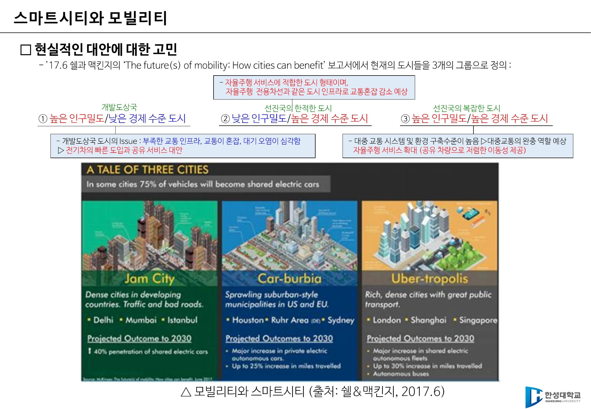
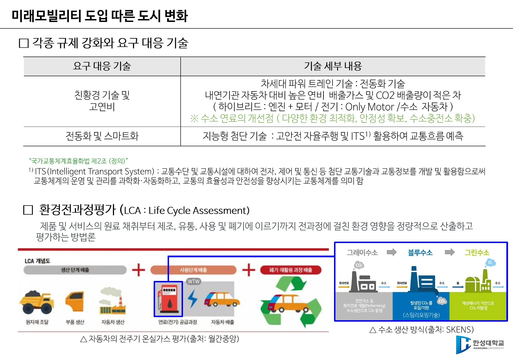
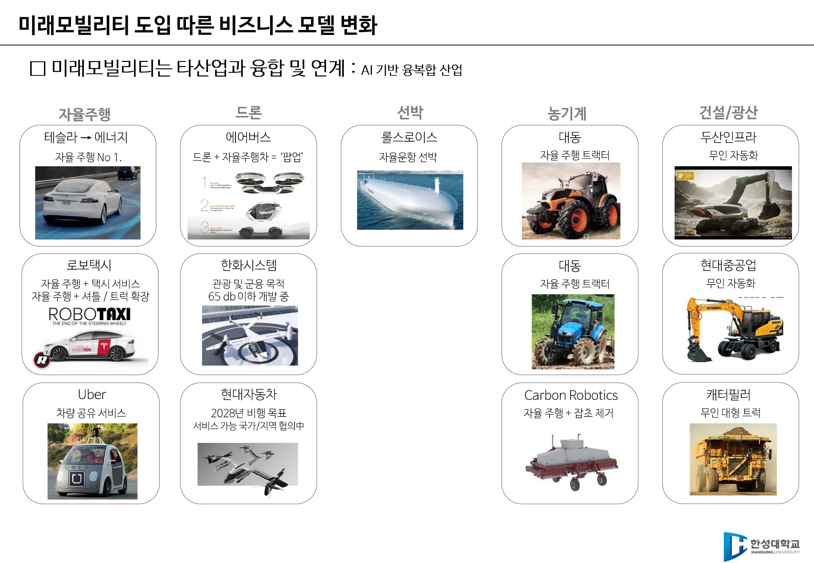

1주차 · 미래모빌리티란 무엇인가¶
🔗 강의 흐름 — 1주차는 지도를 펼치는 주다. 이 과목이 앞으로 15주 동안 다룰 자율주행·드론·로봇이 왜 "모빌리티"라는 한 단어로 묶이는지, 그리고 그것이 왜 도시와 산업 전체를 바꾸는 문제인지 잡는다.
학습목표 — 모빌리티와 미래모빌리티의 개념을 정의하고, 미래모빌리티 도입이 도시·규제·비즈니스 모델에 미치는 변화를 사례로 설명할 수 있다.
💡 기초 다지기 — 모빌리티(Mobility)는 "탈것"이 아니다. 자동차·비행기·선박이라는 물건이 아니라, 무엇인가의 이동을 가능하게 하는 기술의 총합을 뜻한다. 그래서 배터리도, 통신도, AI도, 심지어 도시 설계도 전부 모빌리티 기술에 들어간다.
🗺️ 한눈에 보는 개념도¶
flowchart TB
M["모빌리티<br/>= 이동을 가능하게 하는 기술의 총합"]
M --> T1["기존 운송수단<br/>자동차·비행기·선박"]
M --> T2["+ 추가 기술"]
T2 --> A["전동화<br/>배터리·수소"]
T2 --> B["지능화<br/>AI·자율주행"]
T2 --> C["연결<br/>5G·V2X"]
T1 --> F["미래모빌리티"]
A --> F
B --> F
C --> F
F --> R1["도시의 변화<br/>스마트시티"]
F --> R2["규제의 변화<br/>환경·안전 기준"]
F --> R3["산업의 변화<br/>융복합 BM"]1. 모빌리티의 정의¶
- 모빌리티 = 무엇인가의 이동을 가능하게 하는 기술의 총합.
- 인류는 자동차·비행기·선박으로 사람의 이동뿐 아니라 물류의 이동까지 획기적으로 가능하게 했다.
- 미래모빌리티는 이 기존 운송수단에 추가적인 기술이 포함되어 확장되는 개념이다.
시험 포인트 — 정의 문항 단골
"미래 모빌리티의 정의로 가장 적절한 것은?"의 정답은 → 사람과 물류의 이동을 효율적으로 지원하기 위해 기존 운송수단에 첨단 기술이 융합·확장된 개념 ✕ 전기차 중심 기술 / ✕ 제조사의 DX만을 의미 / ✕ 드론과 로봇만 포함
2. 자율주행이 바꾸는 도시 — 세 가지 실제 사례¶
| 사례 | 주체 | 내용 |
|---|---|---|
| CES 2020 미래 도시 비전 | 현대자동차 | 수소 에너지 · 자율주행 셔틀 · 로봇 · UAV를 하나의 도시 비전으로 제시 |
| HMGICS (싱가포르 글로벌혁신센터) | 현대차그룹 | 2023.11 준공. 부지 14,000㎡, 연면적 약 9만㎡(축구장 13개), 지하2~지상7층. 웨어러블 로봇 착용 작업자, AMR 자율 배송, 스마트팜. "도시 인프라·모빌리티·사람이 연결되는 스마트 도심형 모빌리티 허브" |
| Woven City | 토요타 | 2021 착공. 인공지능·로보틱스·모빌리티·재료과학·수소를 실증. 사람↔기계, 사람↔사람, 도시↔사람을 잇는 Connectivity. (토요타의 사업 초기 모델이 방직 공장이었다는 점이 이름의 유래) |
"모빌리티의 발전은 도시의 변화를 가져온다."
3. 스마트시티와 모빌리티 — 도시는 하나가 아니다¶
쉘 & 맥킨지 보고서 The future(s) of mobility: How cities can benefit (2017.6)는 도시를 3개 그룹으로 나눈다.
| 그룹 | 특징 | 대표 | 처방 |
|---|---|---|---|
| ① 고밀도 · 저소득 | 교통 인프라 부족, 혼잡, 대기오염 심각 | 개발도상국 도시 | 전기차의 빠른 도입 + 공유 서비스 |
| ② 저밀도 · 고소득 | 자율주행 서비스에 적합한 형태 | 선진국의 한적한 도시 | 자율주행 전용차선 등 인프라로 혼잡 감소 |
| ③ 고밀도 · 고소득 | 대중교통·환경 구축 수준이 높음 | 선진국의 복잡한 도시 | 대중교통이 완충 역할, 공유 자율주행 확대 |
핵심 통찰
같은 "자율주행 도입"이라도 도시의 인구밀도와 경제 수준에 따라 정답이 다르다. 기술이 아니라 맥락이 처방을 결정한다.

▲ 쉘&맥킨지 「A Tale of Three Cities」 — Jam City(고밀도·저소득) / Car-burbia(저밀도·고소득) / Uber-tropolis(고밀도·고소득) (출처: 1주차 슬라이드 p11)
4. 기존 도시 vs 자율주행 전용 도시¶
| 구분 | 기존 도시 | 새로운 자율주행 전용 도시 |
|---|---|---|
| 환경 | 극심한 도로 혼잡, 법·제도 미비 | 자율주행 차량만 운영, 모빌리티 규제 샌드박스 |
| 기술 | 자율주행 기술 부족 | 5G + 자율주행 융합 (차량 공유를 전제로 도시 설계) |
→ 주차장 없는 자율주행 전용 도시 개념도(LG CNS), 도시 외곽 태양광 충전 스테이션.
5. 글로벌 정책 동향 — 두 개의 축¶
① 온실가스 감축
- 차량 연비 향상 및 CO₂ 배출 기준 강화
- 전기자동차 재고·판매 목표 의무화
- 충전 인프라 규정 및 설치 지원
② 내연기관 차량의 단계적 축소
| 국가 | 목표 |
|---|---|
| 유럽연합(EU) | 2035년부터 내연기관 자동차 판매 금지 |
| 미국 | 2032년까지 판매 신차의 67%를 전기차로 대체 |
| 중국 | 2035년까지 신에너지 50% · 플러그인 하이브리드 50% 비중 제조 |
시험 포인트 — 정책 오답 보기 주의
2026 중간고사 3번은 위 세 항목을 그대로 내고, "한국은 2025년부터 내연기관 차량의 신규 등록 제한 정책을 단계적으로 도입하고 있다"를 오답으로 넣었다. 그런 정책은 없다.
6. 규제 강화에 대응하는 기술¶
| 요구 대응 기술 | 세부 내용 |
|---|---|
| 친환경·고연비 | 차세대 파워트레인 = 전동화 기술. 내연기관 대비 높은 연비, 배출가스·CO₂ 적은 차. (하이브리드 = 엔진 + 모터 / 전기 = 모터만 / 수소차) ※ 수소 연료의 개선점: 다양한 환경 최적화, 안정성 확보, 수소충전소 확충 |
| 전동화 및 스마트화 | 지능형 첨단 기술 — 고안전 자율주행 및 ITS 활용으로 교통흐름 예측 |
- ITS(Intelligent Transport System, 지능형 교통체계) — 교통수단·교통시설에 전자·제어·통신 등 첨단 교통기술과 교통정보를 개발·활용하여 교통체계의 운영·관리를 과학화·자동화하고 효율성과 안전성을 향상시키는 교통체계. (국가교통체계효율화법 제2조 정의)
- LCA(Life Cycle Assessment, 환경전과정평가) — 제품·서비스의 원료 채취 → 제조 → 유통 → 사용 → 폐기 전 과정에 걸친 환경 영향을 정량적으로 산출·평가하는 방법론.
왜 LCA가 중요한가
전기차는 주행 중 배출가스가 0이지만, 배터리 제조와 발전 과정의 배출이 있다. LCA는 "주행 중"이 아니라 전 생애주기로 따지자는 관점이며, 수소 생산 방식(그레이/블루/그린)을 논할 때도 같은 잣대가 쓰인다.

▲ 요구 대응 기술 표와 LCA(환경전과정평가) 도해 — 원료채취→제조→유통→사용→폐기 전 과정을 정량 평가한다 (출처: 1주차 슬라이드 p13)
7. 미래모빌리티의 비즈니스 모델 — AI 기반 융복합 산업¶
미래모빌리티는 타 산업과 융합·연계된다. 자율주행 기술이 자동차 밖으로 퍼져 나가는 지도다.
| 분야 | 사례 |
|---|---|
| 자율주행 | 테슬라(→에너지로 확장), 로보택시(자율주행 + 택시 서비스), 셔틀·트럭으로 확장, 우버(차량 공유) |
| 드론 | 에어버스(드론 + 자율주행차 = '팝업'), 한화시스템(관광·군용, 65dB 이하 개발 중), 현대자동차(2028년 비행 목표) |
| 선박 | 롤스로이스 — 자율운항 선박 |
| 농기계 | 대동 — 자율주행 트랙터, Carbon Robotics — 자율주행 + 잡초 제거 |
| 건설·광산 | 두산인프라코어·현대중공업 무인 자동화, 캐터필러 무인 대형 트럭 |

▲ 자율주행·드론·선박·농기계·건설/광산으로 퍼져 나가는 융복합 산업 지도 (출처: 1주차 슬라이드 p14)
🤔 생각해 봅시다¶
- 내가 사는 도시는 쉘&맥킨지의 3개 그룹 중 어디에 속하는가? 그 도시에 가장 먼저 도입해야 할 모빌리티 기술은 무엇인가?
- 전기차가 "친환경"이라는 주장을 LCA 관점에서 반박하거나 옹호해 보자. 어떤 데이터가 필요한가?
- Woven City처럼 "도시를 새로 짓는" 접근과, 기존 도시를 개조하는 접근 중 어느 쪽이 현실적인가?
✅ 이번 주 체크리스트¶
- 모빌리티/미래모빌리티를 한 문장으로 정의할 수 있다
- 쉘&맥킨지 도시 3분류와 각각의 처방을 말할 수 있다
- EU·미국·중국의 내연기관 축소 목표 연도와 수치를 안다
- LCA와 ITS를 각각 한 문장으로 설명할 수 있다
▶️ 다음 주 예고 — 미래모빌리티의 여러 갈래 중 자율주행을 먼저 파고든다. 자율주행자동차와 자율주행시스템의 법적 정의, 왜 필요한가(사고의 94%), 그리고 우리나라 제도(임시운행허가·시범운행지구)를 본다. → 2주차